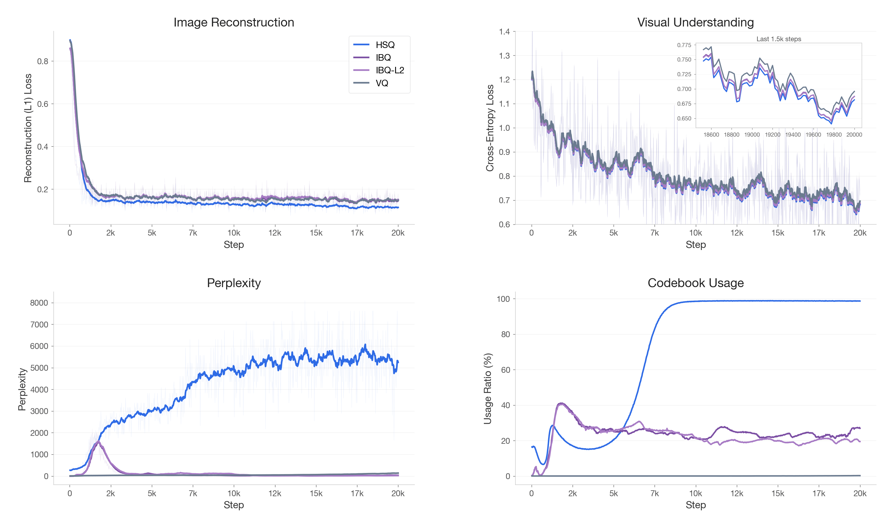
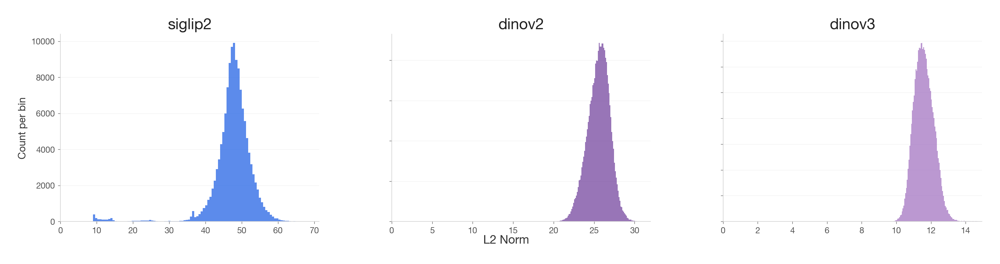

Abstract
We propose dRAE, a visual tokenizer built on Hyper-Spherical Quantization (HSQ). By assigning codes via cosine similarity and updating embeddings in tangent space, HSQ aligns the quantization objective with the intrinsic geometry of pre-trained vision encoder features (e.g., SigLIP2, DINOv2), achieving exceptionally high codebook utilization and strong semantic alignment.
Built upon the RAE codebase, dRAE supports end-to-end training with optional encoder distillation and online evaluation of PSNR / SSIM / rFID during training.

Observation
In high-dimensional Euclidean space, a standard Gaussian distribution exhibits the thin-shell concentration property: if $z \sim \mathcal{N}(0, I_d)$, its norm $\|z\|_2$ concentrates sharply around $\sqrt{d}$ as $d \to \infty$. Vision encoders such as SigLIP2 are trained with contrastive objectives that encourage features to spread uniformly across directions — a pressure analogous to the isotropic structure of a Gaussian[1]. Related self-supervised approaches like JEPA also yield highly regular representations[2], which have been shown to encode density-related structure that can be exploited with Gaussian models. Their patch embeddings, as suggested by recent studies[3,4], similarly concentrate on a thin spherical shell, with meaningful information encoded in both the direction (angular) and the radius (magnitude) of each feature vector.
We randomly sample 512 images from ImageNet and encode them with SigLIP2, DINOv2, and DINOv3 to compute the L2 norm of all patch embeddings. As shown in Fig. 2, the statistics clearly demonstrate that most patch embeddings are concentrated on a thin shell rather than densely occupying the Euclidean space, suggesting that high-dimensional visual features have strong angular structure.

To further investigate the role of each component, we conduct two controlled experiments comparing models trained on raw features Z versus L2-normalized features Z′. For understanding (H1), an MLLM following the LLaVA architecture shows negligible degradation (<1%) across MMBench, TextVQA, and POPE when switching to Z′, confirming that semantic content resides in the direction of features. For reconstruction (H2), a ViT decoder trained on Z′ suffers a marked drop (SSIM −0.11, rFID +4.95), confirming that magnitude is essential for structural fidelity.
| Visual Understanding | Image Reconstruction | |||||
|---|---|---|---|---|---|---|
| Variant | MMBench ↑ | TextVQA ↑ | POPE ↑ | PSNR ↑ | SSIM ↑ | rFID ↓ |
| Raw Z | 82.2 | 61.3 | 85.2 | 22.5 | 0.62 | 4.62 |
| Norm Z′ | 81.1 | 60.7 | 84.3 | 20.6 | 0.51 | 9.57 |
We summarize the two key observations as follows:
H1. Semantic information roughly lies on a hyper-sphere for understanding.
H2. Magnitude is structurally essential for image reconstruction.
[1] Betser et al., InfoNCE Induces Gaussian Distribution, ICLR 2026.
[2] Balestriero et al., Gaussian Embeddings: How JEPAs Secretly Learn Your Data Density, arXiv 2510.05949.
[3] Levi & Gilboa, The Double-Ellipsoid Geometry of CLIP, ICML 2025.
[4] Wang & Isola, Understanding Contrastive Representation Learning through Alignment and Uniformity on the Hypersphere, ICML 2020.
Core Design: Hyper-Spherical Quantization
Conventional VQ is designed for low-dimensional VQ-VAEs, usually in $d \in [8,64]$, and optimizes its codebook using the L2 distance. This biases the Voronoi tessellation toward radial differences rather than angular structure: samples with larger or varying norms disproportionately influence the partition boundaries, irrespective of their directional alignment. We posit that this magnitude-sensitivity is a primary cause of codebook collapse when quantizing high-dimensional ($d > 512$) semantics.
At the same time, simply discarding the magnitude variance and imposing a unit-sphere prior on inputs, would deteriorate reconstruction, as this operation is non-uniform across tokens, which will eventually degrades low-level structural and textural nuances.
To mitigate this, we propose Hyper-Spherical Quantization (HSQ), which routes assignments on the hyper-sphere while preserving the full geometry of the output:
The nearest-neighbor lookup maximizes cosine similarity
s = cos(z, c).
Crucially, the input z and output z_q are never normalized —
only the routing decision is spherical, preserving the full magnitude.
The codebook update uses a cosine loss
1 − cos(z_q, z.detach()),
keeping the gradient signal consistent with the spherical assignment criterion.
BibTeX
@article{ma2026dRAE,
title = {dRAE: Representation Autoencoder with Hyper-Spherical Codes},
author = {Ma, Tianren and Long, Lin and Chen, Chuyan and Zhang, Mu and
Zhao, Junbo and Zhang, Tong and Ye, Qixiang},
year = {2026},
note = {arXiv:2607.XXXXX}
}